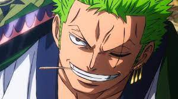

TWO OF THE FIRE CHARACTERS IN OP

MonkeyD.Luffy
Born in Foosha Village, Luffy is the son of Monkey D. Dragon, the leader of the Revolutionary Army and the grandson of the Marine hero Monkey D. Garp

Roronoa Zoro
Also known as "Pirate Hunter" Zoro is a main combatant of the Straw Hat Pirates, one of their two swordsmen ,and is publicly recognized as the right-hand man of his crew's captain Monkey D.